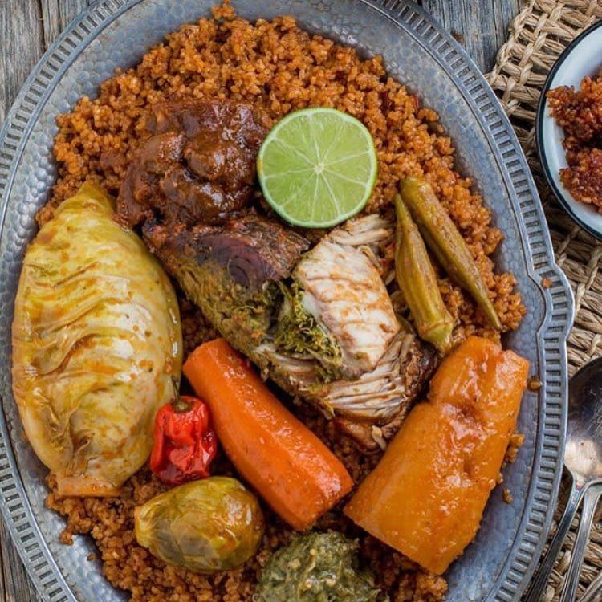
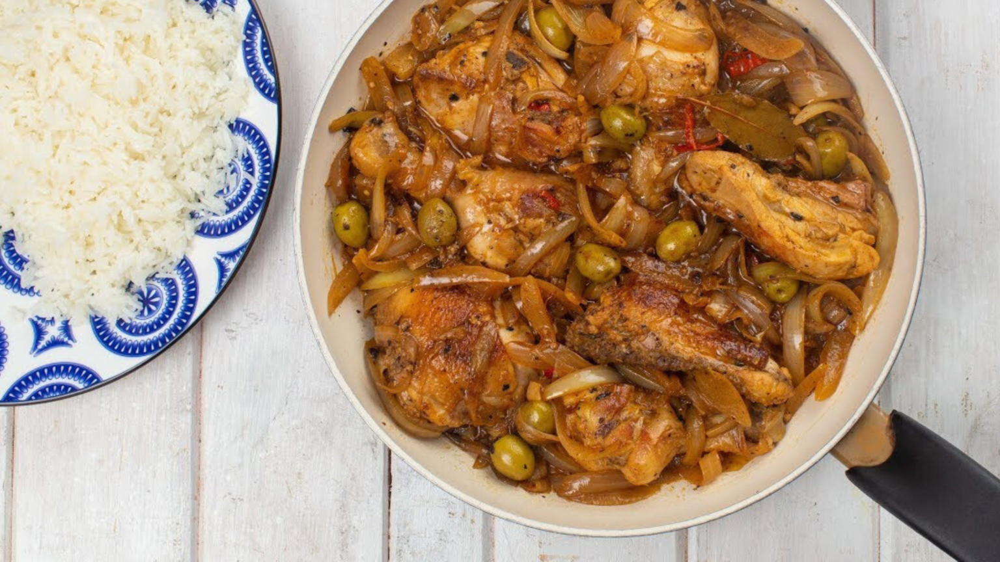
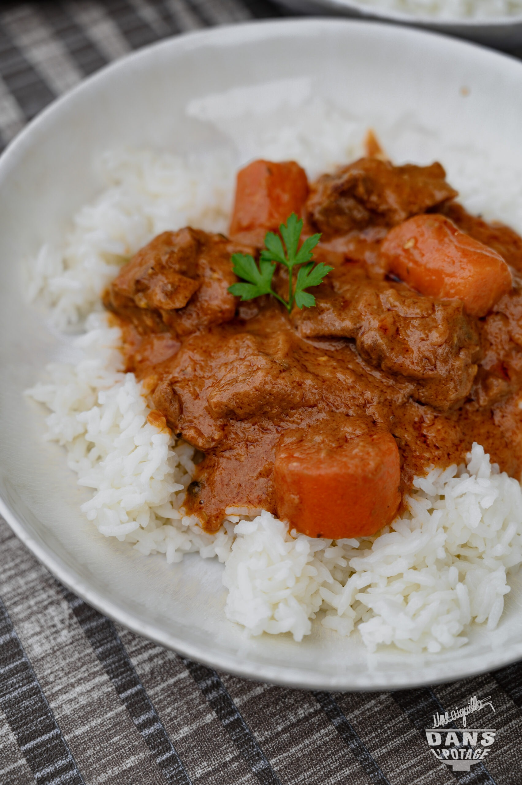

Senegalese cuisine combines fresh ingredients, bold flavors, and centuries of cultural traditions.
Featured Senegalese Dishes
Explore popular dishes, cooking techniques, and cultural traditions from Senegal.

Thieboudienne
Senegal's national dish featuring fish, rice, and vegetables.

Chicken Yassa
Marinated chicken cooked with onions, lemon, and mustard.

Mafe
A rich peanut stew often served with rice.
Senegalese Food Facts
Thieboudienne is Senegal's national dish made with fish, rice, and vegetables.
Teranga is the Senegalese tradition of hospitality, generosity, and welcoming guests.
Bissap (hibiscus juice), bouye (baobab juice), and ginger juice are among the most popular drinks in Senegal.